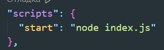
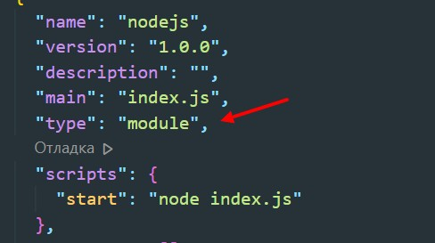
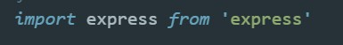
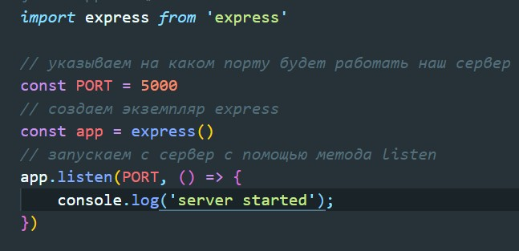
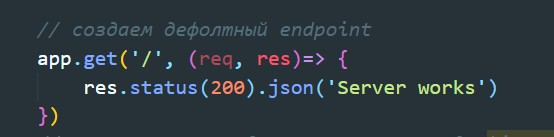
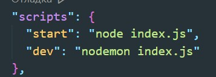
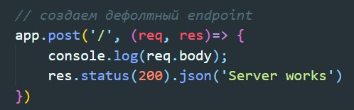
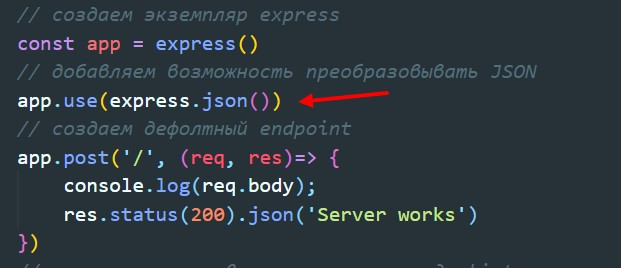

Для разработки мы будем использовать:
1 Инициализируем проект
npm init -y2 устанавливаем express
npm i expressПосле того как установили express в Package.JSON в разделе скриптов вводим вот такую команду:
Теперь что бы использовать импорты и экспорты ES6 в Package.JSON добавляем вот такую запись:
3 Открываем наш исходный файл и в нем импортируем express
Что бы запустить сервер пишем код:
Что бы запустить сервер в консоле вводим npm start. Метод listen принимает два параметра. 1 - порт на котором будет запущен сервер, 2 - callback который будет вызван в случае успешногозапуска сервера. Теперь если открыть браузер и в адресе указать localhost:5000 то мы увидим надпись "Cannot GET /" т.е. сервер стартанул, но мы пока ничего не возвращаем на GET запрос
Перед слушателем обращаемся к нашему экземпляру exprerss и вызывыаем метод get. Этот метод принимает два аргумента, первый это endpoint (мы указываем простой слеш) и второй - это callback который принимает два пара метра: 1 - reques, 2 - response. У response dspsdftv метод status n передаем туда 200 (success) после чего вызываем метод json и передаем тело ответа. пока передадим строку
Если сейчас обновить страницу в браузере, то мы не увидим изменений. Нам нужно перезапустить сервер. Что бы при каждом изменении не перезапускать сервер будем использовать библиотеку - nodemon
npm i -D nodemonПосле того как пакет установился в Pachage.JSON добавляем новый скрипт
Теперь при запуске npm run dev запустится сервер который будем сам перезапускаться при каждом изменении в index.js
В req нам могут быть доступны заголовки, query параметры или же body в случаем POST запроса (в этом случае надо будет использовать метод post у экземпляра express)
Сейчас если в postman мы выполним POST запрос и передадим тело, то в консоле мы увидим undefined.Это потому что по умолчанию express не может преобразовать JSON, что бы исправить ситуация необходимо
После этого body нормально отображается